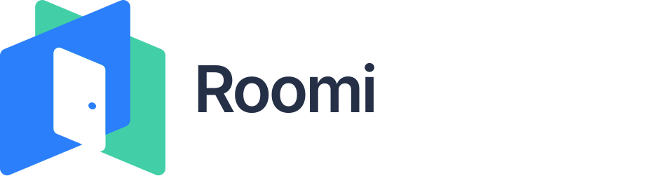

8/17–9/3
対象履歴なし
このディレクトリを作業場所とするAIセッションとGitコミットは確認できなかった。課題の発見過程は記録外。
「この意思決定を進めるために、まだ誰の何の合意が足りない？」を見つけ、必要なときだけ会話に入るAI。

Roomi開発では、Codex・Gemini・Grokを、課題整理、設計、実装、検証、修正、発表準備まで横断して利用。モデルを替えるだけでなく、複数セッションと役割分担を使い、観察→修正→再検証を短い周期で回していた。
人が担った中心は、問題設定、優先順位、受入水準の引き上げ、実行承認。AIはリポジトリ調査、選択肢の具体化、複数領域の実装、自動テスト、ブラウザ・実LLMを使った確認、Git/PR作業を担った。
「セッション」はユーザー起点の会話単位。「実行」はそこから起動した委譲エージェントと自動レビューも含む。時間は並列処理を足した延べエージェント処理時間で、人が画面の前にいた時間ではない。
| エージェント | 会話 | 活動日 | 処理時間 | トークン | コスト | 主な担当 |
|---|---|---|---|---|---|---|
| Codex | 14 実処理12 | 4日 | 11.90h turn duration合計 | 660.47M | 実額不明 API換算 $425.93+ | 評価器、合意形成ループ、実LLM検証、Pitch・動画、独立レビュー |
| Gemini Antigravity | 12 | 3日 | 3.82h イベント間5分cap推定 | 不明 usage記録なし | 不明 | D3 UI、Google認証、RAG/関係者事前構築、D1、複数デモ、並列修正 |
| Grok | 7 実処理6 | 2日 | 3.37h turn開始〜終了合計 | 78.77M | 全体不明 1会話のみ $2.10 | Slackなしデモ、介入ロジック、ブランド/UI、desktop/mobileブラウザ確認 |
トークンはCodexとGrokの記録確認分のみで、Gemini分は含まない。既知入力の97.8%は履歴・ツール結果・リポジトリ文脈のキャッシュ再利用。
対象期間は27日だが、記録上の利用は9/4以降の6日に集中。プロバイダーを横断すると、UI/Auth → デモ → 評価 → 合意形成という流れが見える。
このディレクトリを作業場所とするAIセッションとGitコミットは確認できなかった。課題の発見過程は記録外。
実際のSlackに近いデモ方法を壁打ち。D3.jsの会話グラフ、状態表現、モック、デザインシステムを具体化した。
背景追従、avatar node、fullscreen、popup/sidebar、timelineを調整。Geminiが変更とbuildを進め、Google OAuth + Better Authも実装した。
Grokがステークホルダー指定、シナリオ再生、毎発言の介入判定、架空名、担当一覧、Roomi人格、専用Control Centerページを実装し、desktop/mobileで操作確認。Codexは評価器、known-gap、Pitch本文、30秒動画へ展開した。
「会話の詰まり検知」から「不足する合意の収集」へ価値を深掘りし、Worker/D1/Webへ実装。Geminiの複数並行セッションとCodexの委譲・レビューで、早すぎる介入、テンプレ、重複、複数トピック、接続・再生UXを反復修正した。
利用深度は「AIがどこまで作業したか」、確認度は「成果をどこまで確かめたか」。自律性と品質を混同しないため、別々に4段階で評価した。
| フェーズ | AIの役割 | 人の役割 | 代表成果 | 利用深度 | 確認度 | 評価上の限界 |
|---|---|---|---|---|---|---|
| 課題の壁打ち | 既存実装の限界を整理し、合意形成への強化案を提示 | 「誰の何の合意が足りないか」を主題として再設定 | 合意形成ループの方向性 | ●●○○2/4 | ●●○○2/4 | 初期27日のうち前半18日は履歴なし |
| 要求分析・定義 | コードと会話から制約・安全条件・受入観点を抽出 | 自動送信、実行タイミング、データ参照の期待を修正 | 無回答の扱い、人承認、allowlist、既定OFF | ●●●○3/4 | ●●○○2/4 | 要求ID・優先順位・追跡表はない |
| 仕様設計 | Python/Worker/Webの責務、データモデル、Policyを設計 | TS統合、比較方式、既知弱点の残し方を選択 | version付き合意、outbox、Cron、評価器 | ●●●●4/4 | ●●●○3/4 | Python版とWorker版に判定差が残る |
| 実装 | 複数アプリを横断して変更、委譲、レビュー、Git/PR化 | 実行許可、技術選択、成果の受入・差し戻し | 合意収集、D1、D3、OAuth、デモ、RAG | ●●●●4/4 | ●●●○3/4 | 9/12に25コミットが集中 |
| テスト | 単体/E2E/型検査、ケース評価、ブラウザ・実LLM確認 | dummy検証を退け、反復回数と実環境水準を要求 | 77 named tests、baseline/known-gap、21 LLM calls | ●●●●4/4 | ●●●○3/4 | 本番Slackでの継続E2Eは未確認 |
| フィードバック修正 | 画面・ログ・挙動から原因を追い、修正と再確認 | 早すぎる介入、テンプレ、重複など具体的違和感を提示 | 再介入、3トピック、typing、failover、再生停止 | ●●●●4/4 | ●●●○3/4 | 初回検証が受入水準に届かない場面あり |
| その他 | プロダクト説明、Pitch本文編集、動画制作、運用タスク | 既存ブランド尊重、公開範囲、文面と見た目を確認 | 紹介文、30秒動画、スクリーンショット、Taskfile | ●●●○3/4 | ●●●○3/4 | 外部公開・視聴者評価は対象外 |
9/12、人が「今は会話の停滞検知に寄りすぎている」と問題を言語化。Codexは合意形成機能案を構造化し、Geminiでは複数agent/RAGや関係者抽出タイミングを問い直した。
評価: 問いを実装可能な構造へ変換できた。一方、課題仮説やユーザー調査の文書はない。
AIが安全性と挙動を要求へ落とした。無回答を賛否に変えない、提案変更時に古い立場を継承しない、低確信・センシティブな送信は人が承認、外部Slack自動送信は既定OFFなど。
評価: 暗黙の期待をコード上の制約にできた。要求とテストの対応表があると再現性はさらに上がる。
AI Core、Slack Bot、Cloudflare Worker/D1、Next.js Control Centerの責務を整理。Policy、合意version、監査、outbox、Cron、認証境界、デザインシステムまで設計した。
評価: 実装・運用・安全を同時に扱えた。二系統の判定実装は技術的負債として残る。
Codexは探索・実装・レビューを役割分担。GeminiはWeb/Auth/AI Core/D1を並行実装。Grokはデモ、介入ロジック、UIを長時間セッションで一気通貫した。
評価: Codexだけでも65/79実行が委譲または自動レビュー。並列化は強いが、Geminiのmaster直接反映やGrokの大きな複合commitは統合・レビューリスクも増やした。
Codexはbaseline/known-gapと実LLM反復、Geminiはbuild・HTTP・実Slack read-only・Cloudflare、Grokは単体テストとdesktop/mobile操作を担当。検証経路を複数持った。
評価: 弱点を測定可能に残した点が良い。一方、Geminiの最終2会話では404・重複を検出したまま完了証拠がなく、履歴時点では未解決として扱う。
スクリーンショットや動作結果を見ながら、早すぎる応答、テンプレ文、同じ再介入、トピック切替、Service Worker、typing表示などを修正。重複問題では実LLMを3回・計21呼び出しまで増やし、重複0を確認した。
評価: 人が受入水準を引き上げ、AIが検証方法を更新する協働が明確。
AIはリポジトリからプロダクト概要を説明し、DevCamp Pitchの紹介文を作成・保存。既存ロゴ、フォント、UIを使った30秒動画を作り、見た目のフィードバックにも対応。安全な一括再起動タスクも整備した。
評価: 開発成果を「動くもの」から「他者に伝わるもの」へ変換する用途まで広げている。
「詰まった会話を検知する」実装に対し、人が「不足する合意を集める」が本質だと指摘。AIは既存構造を調査し、合意状態・関係者・質問・承認・outboxまで含む実装計画へ変えた。
ユーザーの依頼で、現行ロジックが通らないケースも追加。mandatoryなbaselineとは分けてknown-gapとして残し、将来の改善が本当に弱点を埋めたか測れるようにした。
dummyによる確認に対し、人が実LLMを要求。さらに重複検出には試行不足と指摘し、AIが複数回の実行へ切り替えた。エージェント任せではなく、受入条件を人が管理した例。
総じて、AIエージェントは実装量を増やすだけでなく、プロダクトの問いをコード、評価、デモへつなぐ役割を担った。質を支えたのは、人が違和感を明示し、検証境界を繰り返し厳しくしたことだった。
session_meta.cwd、Gemini: workspace_uris、Grok: 保存ディレクトリが対象path3プロバイダー合計の実請求額は算出不可。 Geminiにはtoken/cost記録がなく、Grokは実作業6会話中1件だけcostが残る。Codexも契約内利用の按分額と内部 codex-auto-review 単価を持たない。
Codexの参考値 $425.93+ は、Sol/Lunaを標準API単価で換算し、272K超の割増を適用した値。Grokは記録がある1会話だけ$2.10で、全体額ではない。性質が違うため両者を合算していない。
OpenAI公式の標準API単価（$/1M tokens）: Sol = input 4.00 / cached 0.40 / output 20.00、Luna = 0.20 / 0.02 / 1.20。Codexクレジットは契約のincluded usage消費後に使われ、購入価格は契約に依存する。
主な内部根拠: Codex session JSONL、Gemini Antigravityのconversation DB/history/transcript、Grokのsummary/events/chat/usage、Git履歴、README、DESIGN.md、Taskfile、各アプリの実装とテスト。生ログには個人情報や秘密が含まれうるため、本文は匿名化した集計と成果だけを載せた。
外部単価: OpenAI · GPT-5.6 Sol / OpenAI · GPT-5.6 Luna / OpenAI · Codex pricing
確認度4は本番・実サービスで利用者に見える結果まで確認した場合。本レポートでは、Pitch本文保存など一部を除き、プロダクトの本番継続運用は確認度3以下として扱った。